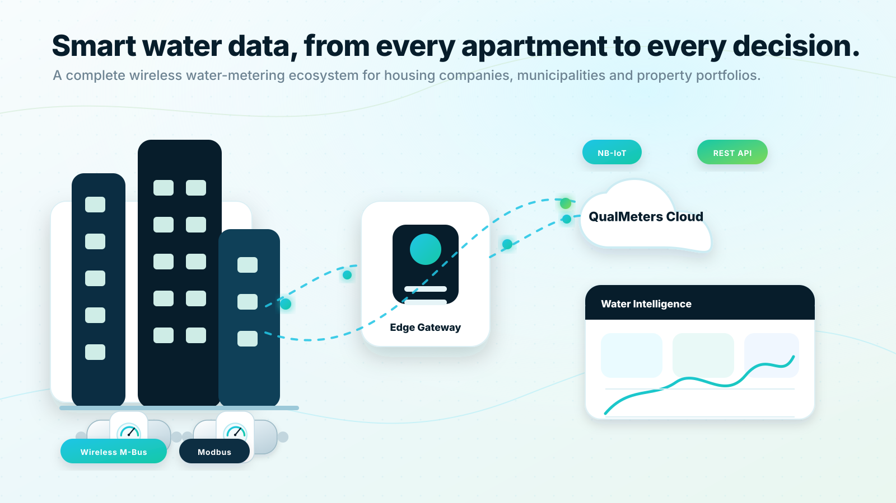

Accurate apartment-level measurement
Use ultrasonic water meters for reliable measurement without traditional mechanical moving parts. New apartment buildings can be specified with separate cold and warm water meters per apartment.
Smart water metering for buildings, cities and portfolios
QualMeters connects MID-certified ultrasonic water meters, wireless communication, resident self-service and organization-grade data APIs into one managed platform. Replace manual reading with reliable water data that supports fair billing, leak awareness, sustainability and smarter operations.

MID-certified ultrasonic meters for cold and warm water applications.
ConnectivityWireless M-Bus, Modbus, gateway collection and NB-IoT direct-to-cloud models.
Resident portalQR-based access, consumption views and leak notifications for residents.
REST APIOrganization-grade access to readings, alerts, metadata and device health.
Home
From meter hardware to usable water data.
Water metering projects often fail when meters, communication, software and integrations are treated as separate purchases. QualMeters is designed as a complete system: field devices are connected, readings are normalized, alarms are managed, and authorized users receive the data through portals, dashboards and APIs.
Use ultrasonic water meters for reliable measurement without traditional mechanical moving parts. New apartment buildings can be specified with separate cold and warm water meters per apartment.
Collect meter data through a local building gateway using Wireless M-Bus, Modbus and other common protocols, or use NB-IoT meters that communicate directly with the QualMeters cloud.
Residents can scan the QR code on their meter, verify access by entering the current reading and view their own consumption in a clear portal.
Cities, municipalities, housing companies and property platforms can retrieve meter readings, alerts and status information through a REST API.
Home
Every user gets the right view.
For residents: Understand daily and monthly consumption, receive leak notifications and compare usage against relevant peer groups when enough profile information is provided.
For housing companies: Improve fairness, reduce manual meter reading, support transparent cost allocation and detect abnormal apartment-level consumption earlier.
For municipalities and cities: Access real-time and interval-based water data through dashboards and APIs for demand insight, billing workflows, operational monitoring and long-term planning.
For property portfolios: Standardize water data across many buildings and detect waste patterns that would otherwise remain hidden until the next manual reading cycle.
Home
Make water use visible, comparable and easier to improve.
Water efficiency starts with visibility. QualMeters helps residents and organizations see consumption trends, identify unusual usage and understand how daily choices affect water demand. The platform supports optional comparison features: when residents add context such as household size, the system can provide more meaningful benchmarks against similar users.
Tell us about your buildings, meter count, communication requirements and integration needs. QualMeters will help you evaluate the right deployment model.
Request a demoSales consultation
Share your building type, meter count, communication requirements and integration needs. QualMeters will help you map the right deployment model and next steps.
No obligation. We will start by understanding your existing meters, buildings and goals.
 Request a demo
Request a demo